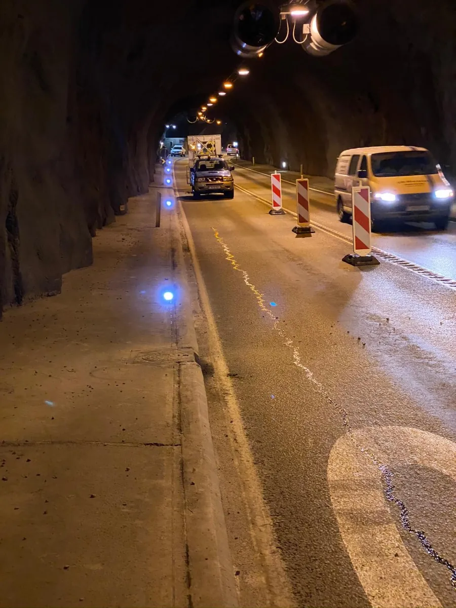
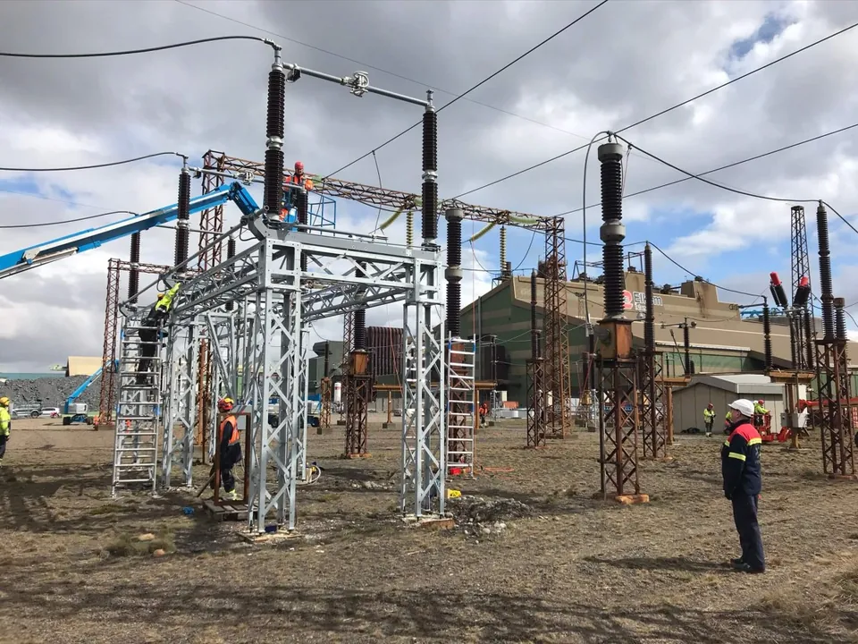
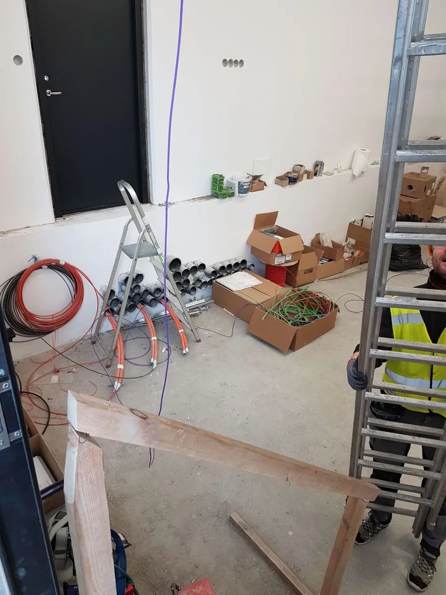
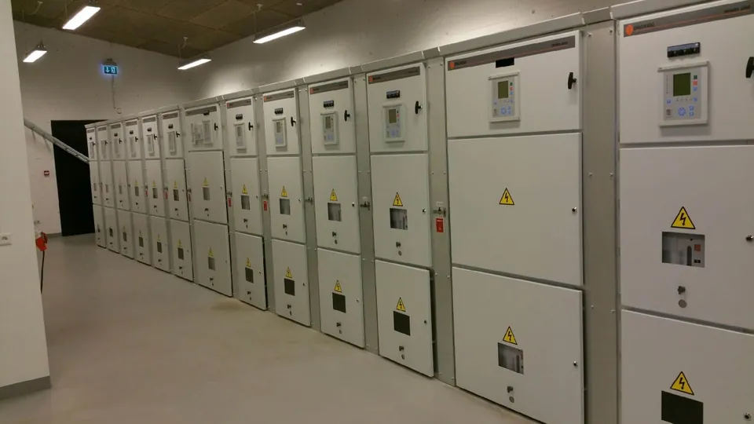
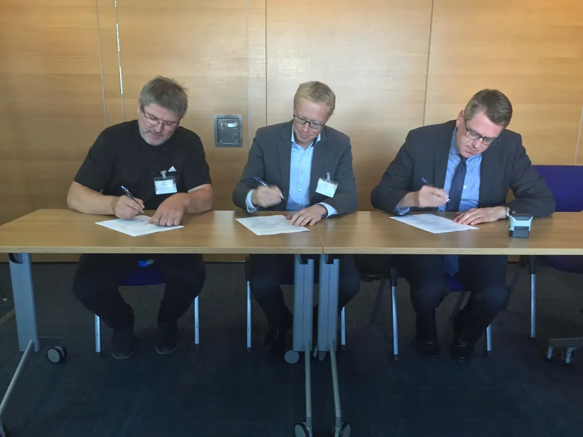
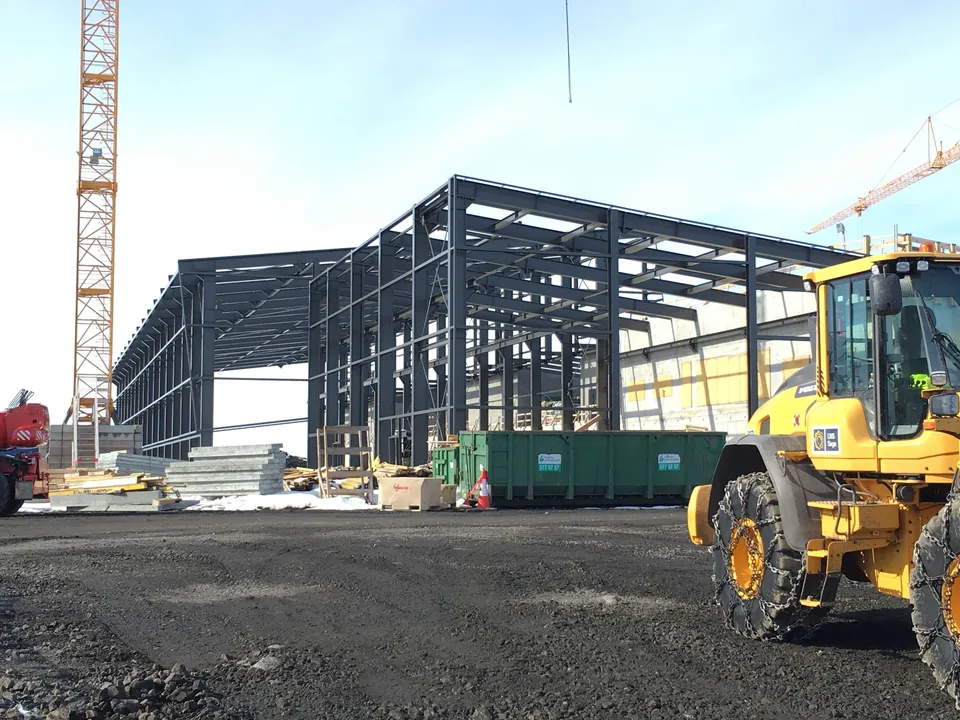
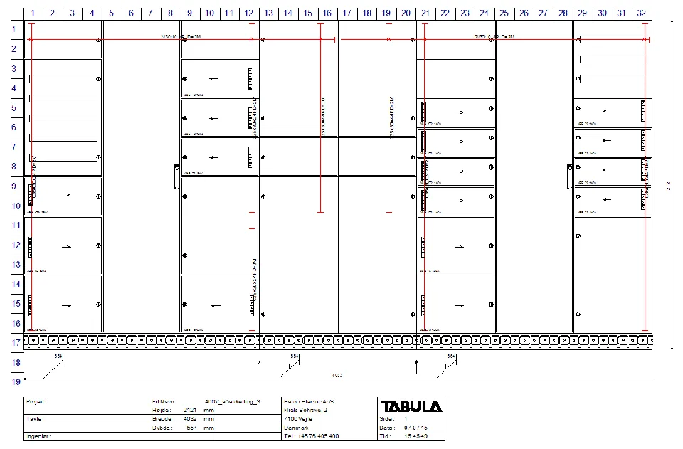
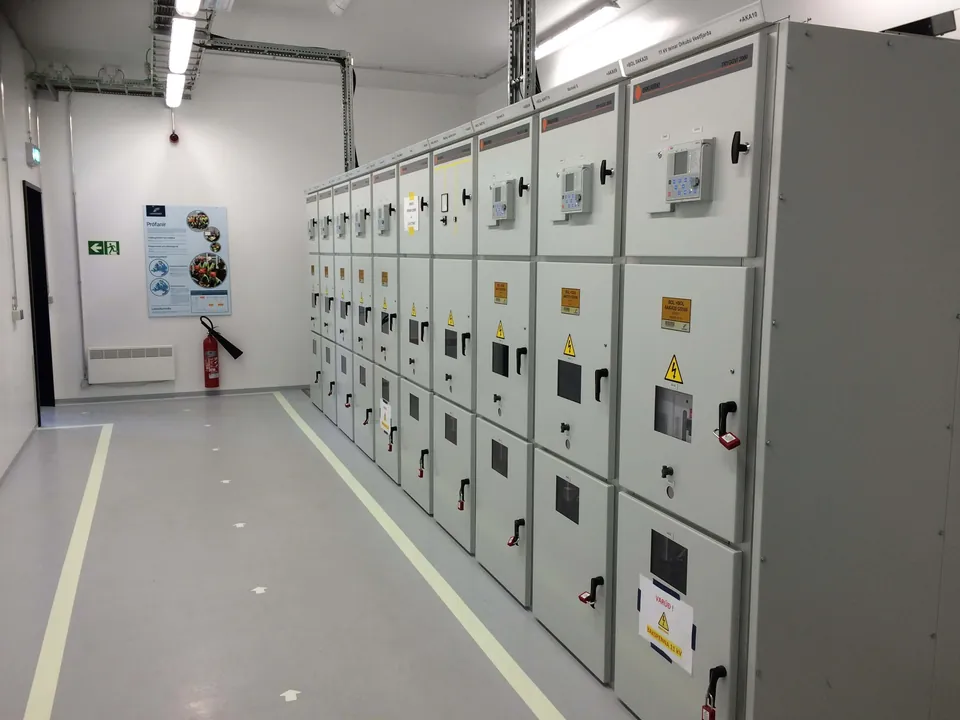

Verkefni
Úr fréttum Orkuvirkis, 2015 til 2020. Hver færsla vísar á fréttina á orkuvirki.is.
-
2020
Kantlýsing í Hvalfjarðargöngum
Orkuvirki vinnur nú að uppsetningu kantlýsingar í Hvalfjarðagöngum.
Frétt á orkuvirki.is
-
2020
220 kV tengivirki á Hólasandi og Rangárvöllum
Landsnet hefur ákveðið að semja við Orkuvirki um uppsetningu á nýju 220 kV tengivirki á Hólasandi norðan við Mývatn, ásamt nýju 220 kV tengivirki á Rangárvöllum Akureyri sem mun tengjast núverandi 132 kV virki sem þar er fyrir.
Frétt á orkuvirki.is -
2020
Endurnýjun á 220 kV rofareit fyrir Elkem
Orkuvirki hefur unnið að endurnýjun á 220kV rofareit fyrir Elkem. Verkið fólst í því að setja saman og full prófa 220kV rofareit.
Frétt á orkuvirki.is
-
2020
Nýir dreifiskápar fyrir Advania Data Center
Skrifað hefur verið undir verksamning um smíði og uppsetningu nýrra dreifiskápa fyrir Advania Data Center. Um er að ræða skápa fyrir Gagnaverið Mjölni að Fitjum í Reykjanesbæ.
Frétt á orkuvirki.is -
2017
Nýtt tengivirki Landsnets á Þeistareykjum spennusett
Orkuvirki í samstarfi við ABB Substation sá um hönnun, uppsetningu og prófun á háspennu rafbúnaði tengivirkisins.
Frétt á orkuvirki.is
-
2017
Nýtt tengivirki á Akranesi
Orkuvirki framleiddi 12 kV rofabúnaðinn og 110 VDC búnaðinn ásamt uppsetningum og prófunum. Einnig sá Orkuvirki um stjórnkerfi og samskiptagátt til stjórnstöðvar Veitna.
Frétt á orkuvirki.is
-
2016
Dreifiskápar fyrir Isavia
Orkuvirki og Ísavia undirrita samninga um smíði dreifiskápa.
Frétt á orkuvirki.is -
2016
Tengivirki á Bakka og Þeistareykjum
Orkuvirki í samstarfi við ABB Substations undirrituðu samning við Landsnet um búnað fyrir tengivirkin að Bakka og Þeistareykjum. Samningurinn felur í sér hönnun, framleiðslu og afhendingu á búnaði ásamt uppsetningu og prófunum.
Frétt á orkuvirki.is
-
2016
Þeistareykjavirkjun
Orkuvirki sér um smíði og uppsetningu rafbúnaðar virkjunarinnar ásamt Rafeyri.
Frétt á orkuvirki.is
-
2015
Nýir aðalrofar fyrir aðaldreifingu LSH í Fossvogi
Orkuvirki undirritar verksamning við LSH um skipti á aflrofum fyrir aðaldreifingu LSH í Fossvogi.
Frétt á orkuvirki.is -
2015
Ný aðaldreifing fyrir Veðurstofu Íslands
Orkuvirki hefur undirritað samning um smíði og uppsetningu á nýrri aðaldreifingu fyrir Veðurstofu Íslands. Um er að ræða aðaldreifiskáp með tveimur 1250 A aðalrofum, fyrir heimtaug og varafl.
Frétt á orkuvirki.is
-
2015
Dreifiskápar fyrir gagnaver Advania, Mjölnir 3
Orkuvirki afhendir tvo nýja dreifiskápa fyrir nýtt gagnaver Advania Mjölnir 3 á Fitjum í Reykjanesbæ.
Frétt á orkuvirki.is -
2015
Varaafl og snjallnet á Vestfjörðum
Orkuvirki sá um uppsetningu og útvegun rafbúnaðar fyrir stöðina ásamt deilihönnun.
Frétt á orkuvirki.is
Hafa samband
Vinsamlegast hafðu samband á orkuvirki@orkuvirki.is, við svörum fljótt og vel.